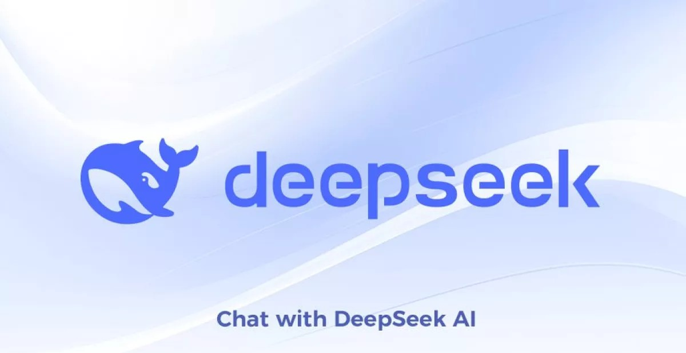

SITUACIÓN: ACTUAL
Las técnicas de Inteligencia Artificial, pueden utilizarse en un sinfín de aplicaciones en medicina, energía, transporte y educación; en la investigación científica, en los sistemas de producción, la logística, los servicios digitales y la prestación de servicios públicos y privados. Y en la gran mayoría de estas aplicaciones, los sistemas de IA consisten en software instalado en el corazón de aplicaciones y servicios. Es decir, son invisibles. Hoy en día, sin IA seríamos incapaces de analizar e interpretar las enormes cantidades de texto, imágenes, audio o vídeo que existen. Entre otras cosas, no podríamos buscar información en internet. En astronomía, física, biología, química, meteorología o medicina cada vez generamos más datos, datos a los que, por su complejidad y volumen, tampoco podríamos sacar partido. Algo similar sucede en la economía y las finanzas, en el comercio electrónico o en el transporte, por citar otras áreas. Básicamente, cualquier aplicación que se beneficie del análisis de grandes cantidades de datos no estructurados es susceptible de ser transformada por la IA.

Podríamos decir que la IA se encuentra en plena efervescencia. La mejora, optimización e investigación sobre nuevas técnicas de inteligencia artificial aplicada al aprendizaje automático (Machine Learning, Deep Learning), la Vision artificial y tecnologías de lenguaje (NLP) son campos donde cada vez se producen más avances, principalmente fruto de las necesidades que atienden tanto al ámbito empresarial como doméstico. Ejemplo de ello puede verse en la reciente irrupción de los asistentes conversacionales como ChatGPT, donde a través de técnicas IA de aprendizaje profundo (Deep Learning) se hace uso de redes neuronales denominadas transformer que permiten procesar grandes cantidades de texto y generar respuestas coherentes y relevantes a las preguntas de los usuarios.
SITUACIÓN: FUTURO
En el futuro, se espera que el aprendizaje profundo continúe avanzando, con redes neuronales cada vez más grandes y sofisticadas, de tal forma que se logre la comprensión del lenguaje natural, la percepción visual avanzada y la toma de decisiones autónomas. Entre ahora y 2034, la IA se convertirá en un elemento fijo en muchos aspectos de nuestra vida personal y empresarial. Los modelos de IA como GPT-4 han mostrado una inmensa promesa en el poco tiempo que han estado disponibles para el consumo público, pero sus limitaciones también se han hecho bien conocidas. Como resultado, el futuro de la IA se está definiendo por un cambio hacia modelos de código abierto a gran escala para la experimentación y el desarrollo de modelos más pequeños y eficientes para estimular la facilidad de uso y facilitar un menor costo.